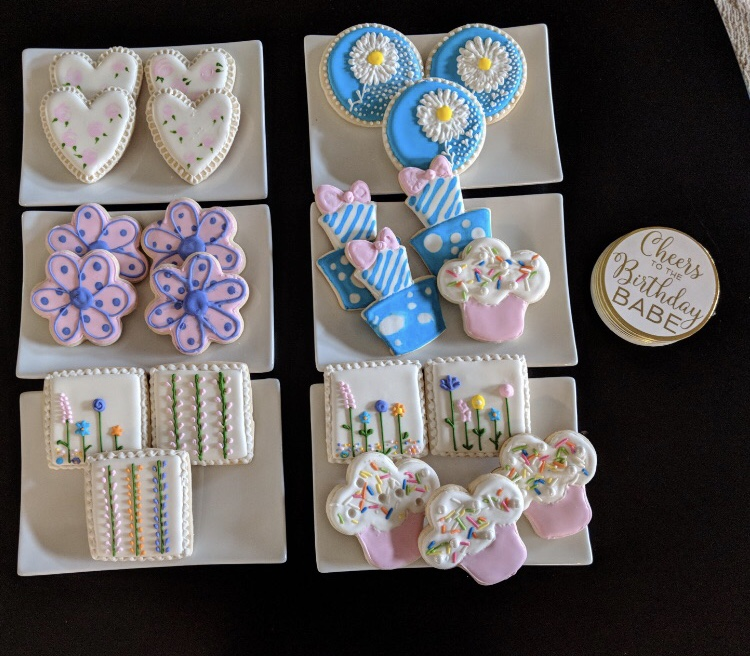

Galllery
Our most popular categories of cookies are:
- Thank-you Cookies
- Bridal Shower Cookies
- Canada Day Cookies
- Sip and See Cookies
- Thank-you Cookies. Cookies are always a great treat to receive, so why not thank someone with a themed cookie. These cookies were made to thank operating room staff for teaching and training new hires.
- Bridal Shower Cookies. Themes always make bridal showers more fun – especially with all of your "friends". We can help create cookies that everyone will love on the dessert table.

- Canada Day Cookies. Going to a backyard BBQ and not sure what to bring? Take a platter of cookies that will sure to be enjoyed by your friends and family. Sip and See Cookies.
Baby shower or Sip and See? Cute cookies are a necessity as your guests celebrate and welcome the new bundle of joy.
|